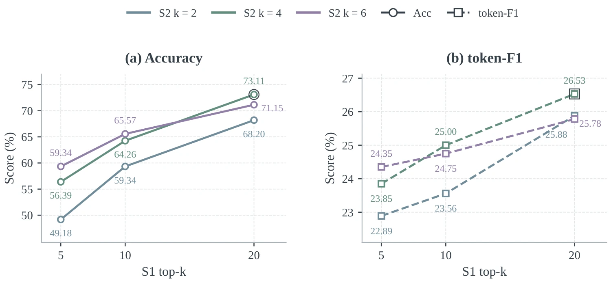
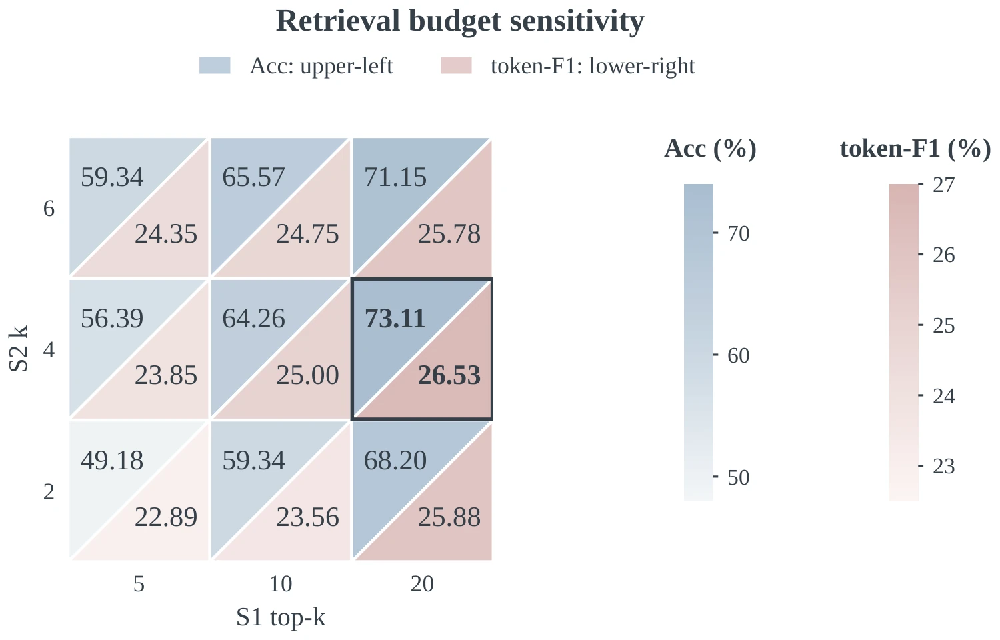

Attribution
Separate source from owner so a report about Bob does not become Bob’s self-report.
Multi-party memory research
Speaker-Centered Dual-Track Memory
for Multi-Party Dialogue
State Key Lab of CAD&CG, Zhejiang University† Corresponding author
SpeakerMem-R1 stores speaker-labeled messages verbatim and organizes derived states by person and group. At query time, it combines evidence from both tracks by participant, event, and time, preserving attribution and state changes in multi-party dialogue.
01 / The problem
Relevance alone cannot answer a relational question. A useful memory must preserve who spoke, whom a statement concerns, whether it belongs to a person or the group, and which state is current.
Who said what is different from what is true about whom.
Separate source from owner so a report about Bob does not become Bob’s self-report.
Keep personal preferences, cross-person observations, group decisions, and group norms distinct.
Follow updates across interleaved members, events, and time without erasing the evidence trail.
02 / The method
SpeakerMem-R1 separates memory construction from query-time evidence selection. The Writer, retrieval procedure, and frozen answerer remain explicit and inspectable.
Store every incoming message verbatim, then let the Writer add only derived records that help retrieval by person, relationship, event, and time.
Turn a question into target rows, issue, mode, and PERSON/GROUP scope before searching either track.
Recall System 1 candidates, optionally expand neighboring messages, select System 2 records under owner/source constraints, and organize a compact evidence set.
Give the frozen answerer the resolved evidence, preserving the source coordinates needed for a checkable answer.
Speaker, time, channel, exact wording, and local context remain available as the factual anchor.
The Writer creates compact records with owner/source fields, PERSON/GROUP scope, action type, and provenance links to the verbatim track.
System 1 recall-n defaults to 40 before the final top-k=10; System 2 uses owner-k=2 and source-k=1 in the main evaluation, with query and answer modules frozen for Writer comparisons.
03 / Writer-R1
RL trains the Qwen2.5-3B Writer while System 1 writing, query organization, and answering remain frozen. The controlled study tests whether a locally deployable Writer can approach the LLM writer reference under the same memory contract.
SpeakerLevenshtein matches structured states within owner buckets, combining token overlap and sequence matching.
The training list contains 15 complete networks, 73 Writer segments, 89 terminal QA items, and 452 supervised actions.
The controlled result evaluates a locally deployable Writer under a frozen query and answer pipeline; it does not establish broad cross-domain RL generalization.
04 / Results
Results on GroupMemBench, SocialMemBench, and EverMemBench evaluate multi-party memory. The public EverMemBench comparison and a two-person LoCoMo boundary test provide complementary evaluations.
05 / See the memory in action
These short illustrative conversations make the paper's design choices concrete: source versus owner, personal versus group scope, and updates that preserve history.
Illustrative examples follow the memory contract described in the paper; they are not additional benchmark samples.
06 / Supplement
Controlled Writer comparisons, retrieval-budget sensitivity, category-level results, and token accounting examine the contributions and limitations of the design.
With the query and answer modules frozen, Writer-R1 reaches 68.20% on 305 held-out questions, compared with 57.38% for SFT and 71.48% for the LLM writer. This controlled comparison measures the usefulness of the RL-trained local Writer under the deployment configuration.
The ablation table uses the DeepSeek-V4-Flash main configuration and the default query budgets. Removing either track reduces accuracy across the three benchmarks. Keeping only the per-speaker or group view also loses performance, showing that raw messages and the two structured scopes provide complementary evidence. ASK changes the balance across benchmarks, so both the no-ASK row and the complete system are retained.


Across the nine no-ASK settings, S1 top-k=20 and S2 k=4 gives the highest observed Acc (73.11%) and token-F1 (26.53%). Increasing S2 beyond four can add redundant structured records, while the main experiments keep the more economical S1 top-k=10, S2 k=2, source-k=1 configuration.
The five challenge dimensions are an analysis framework mapped from official question requirements and recurring error patterns; they are not independently human-annotated labels.
The category tables keep the official benchmark categories as the quantitative units. The weaker term-ambiguity, multi-hop, and open-domain entries expose where attribution, event disambiguation, and cross-evidence composition remain difficult.
Changing the model used for memory construction, retrieval-time interpretation, and answer generation changes absolute scores but preserves the same evaluation interface and query budgets. This is a cross-model robustness check, not a separate training setting.
Totals count prompts, messages, memories, and answers processed at each stage; judge calls are excluded. SpeakerMem uses session-level ingestion on SocialMemBench and Window25 on GroupMemBench/EverMemBench. Mem0, A-MEM, and HippoRAG use chunk5.
Ingestion dominates the memory systems that repeatedly rewrite message chunks. SpeakerMem avoids one call per message by writing a window or session at a time, while BM25 and local Embed have no LLM ingestion stage in this accounting.
SpeakerMem-R1 reaches 70.85% overall (1,407/1,986). Single-hop and temporal recall remain stronger than multi-hop and open-domain questions, which expose the current boundary of the system on cross-segment composition and external knowledge.
07 / Resources
Read the paper on arXiv, explore the code and research figures, or copy the citation below.
@article{zheng2026speakermemr1,
title={SpeakerMem-R1: Speaker-Centered Dual-Track Memory for Multi-Party Dialogue},
author={Zheng, Haobo and Tang, Tan and Chen, Yan and Wang, Weijie and Wu, Yingcai},
journal={arXiv preprint arXiv:2609.26780},
year={2026}
}